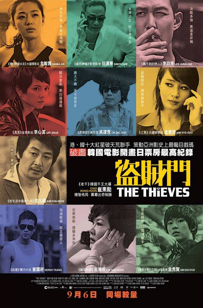
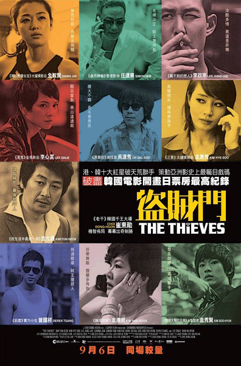
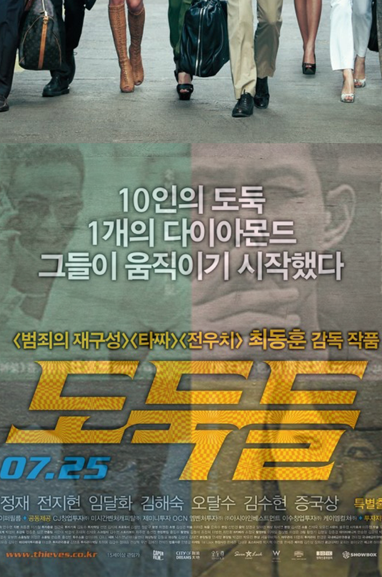
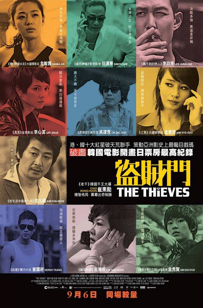

The Thieves
Choi Dong-hoon
A cat burglar named Yenicall (Jun Ji-hyun) seduces the owner of Leesung Gallery (Shin Ha-kyun), and steals a rare artifact with the help of three other criminals: Popeye (Lee Jung-jae), the leader, Zampano (Kim Soo-hyun), the assistant, and Chewing Gum (Kim Hae-sook), a middle-aged conwoman. They are visited by a detective (Ju Jin-mo) shortly after, and realize that staying in Korea is too dangerous. They decide to join a heist led by a master thief named Macau Park (Kim Yoon-seok), a Korean based in Macau who is also Popeye's former boss. Popeye brings along Pepsi (Kim Hye-soo), a convicted safe-cracker who was recently released on parole. In Hong Kong, Chen (Simon Yam), Jonny (Derek Tsang) and Andrew (Oh Dal-su) are contacted by Macau Park and agree to enroll as the Chinese part of the team, along with a safe-cracker named Julie (Angelica Lee).
Macau Park reveals the target to be the Tear of the Sun, a valuable diamond in the possession of Tiffany (Yeh Soo-jung), the mistress of a powerful crime lord named Wei Hong (Ki Gook-seo). The plan is to steal the diamond while Tiffany is visiting a casino in Macau, and to sell it back to Wei Hong, a risky venture seeing that Wei Hong is known for murdering whoever offends him. Each team agrees, however, when they learn that the diamond is worth USD 20 million.
The Korean version of the poster shows the thieves walking confidently with large bags that must be filled with stolen objects. The text above the title reads, "10 thieves, one diamond, they started moving." The chinese version of the poster has ten squares that each has a photo of the ten thieves. The division of the thieves is not ideal to describe the movie, because it might lead one to think that they are against each other. The Korean poster shows their friendship and that they are a team, not enemies.